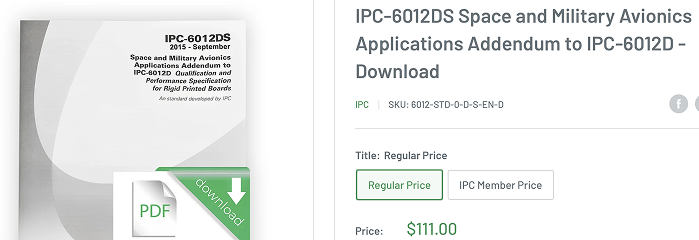
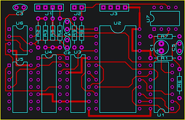

This assumes you know what the important chips of the project are going to be. This is rough guide for how to put them together.
Depending on where the overall project is at, you may or may not have a list of requirements yet. Ideally, you start with this... but some projects, everyone is just trying to figure it out while also not halting progress. In this case, start with what is likely to not be ‘axed’ later, or what you already know is a requirement.
For the meshtastic radio, we know we are using:
For the rest; we will attempt to follow cubesat design standards: (see link here)
Project background
Datasheets
more datasheets to be added later...
What I’m saying is that it’s time to go to ‘footprint’ and schematic symbol mode so you can actually place what you desire into the schematic :-) This will take a while potentially if the plans aren’t already there. Keep in mind that some device symbols and footprints from the internet are not up to snuff for space applications. I believe there is some sort of standard out there for making them TO spec. La-di-da you need to pay for them...

If you are using a part/chip from a big, reputable manufacturer, you may get lucky and find they have created both a simulation tool, and the exact part you are using, in a simulator.
For simpler circuits! Use my favourite, browser based simulator:
La-di-da we are working on the electronics...so much to do...It can be heady sometimes. But after all that design and manufacturing, guess what? If it doesn’t fit, YOU’RE EFFED!
So, this is my note that, even if you are not the most comfortable ‘mechanical designer’, toooooo bad. You can’t mess up the physical constraints of the board.
Now that you’ve completed the heady exercise of designing CIRCUITS, you get to the fun, but also heady, circuit board layout. I really think of this as ‘subway tunnels’ because you need to
It’s time to get rid of the ratlines, assuming you have done some good planning for how the layout is going to work.

Run the DRC and see if you’ve failed anything or if there are any warnings. This is to assist in a sanity check. You should also get another electrically-adept person to check your work so you don’t waste your money and time debugging something silly!
Export your design files and check everything over. This includes
Go to one of the many PCB manufacturers like:
You submit your files and go through whichever manufacturers portal. Usually, they will spend a day or two checking over your files for manufacturing, and if any special methods are required, will bill you extra (I’m looking at you, WSLEDS!!) They may also ask you a few questions or tell you that you are a stupid person for forgetting XYZ (just kidding, they are polite).
Then you need to pay up! The price of the PCB will make you happy, the duties and shipping will remove that happiness quickly :-)